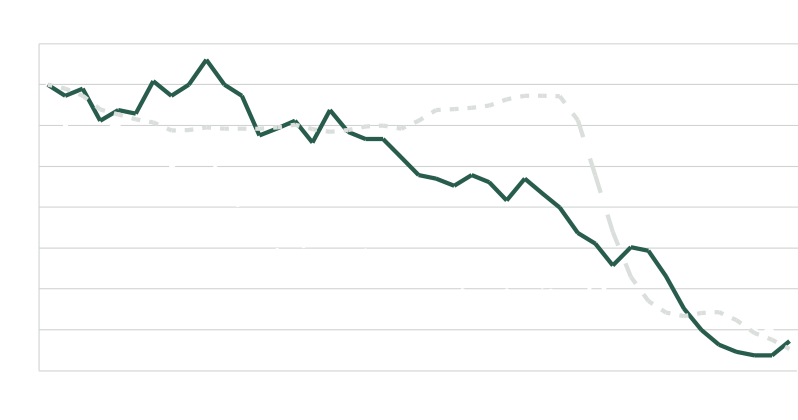
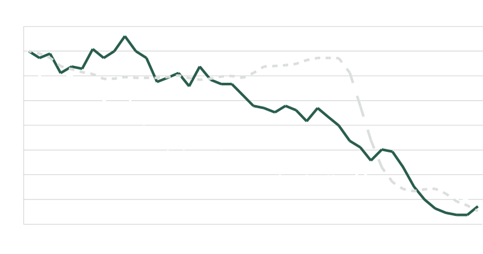

Un año más de

retos superados
DMA DESEMPEÑO ECONÓMICOEn 2015 enfrentamos diversos retos que logramos superar exitosamente y que nos permitieron cumplir y en algunos casos superar los objetivos y metas impuestos para 2015.
Entorno adverso por caídas en precios del petróleo y sus derivados
En 2015, el precio del barril del petróleo West Texas Intermediate (WTI) cayó 30% de USD53.27 a USD37.04, lo cual agudizó la de por sí importante caída de 46% que se dio entre el punto más alto alcanzado en Junio de 2013 y el cierre de Diciembre de 2014. La caída total desde el punto más alto en Junio de 2013 y el cierre de 2015 fue de 62%, sin embargo, superamos exitosamente las dificultades.
Decrementos en precios de productos que distribuimos
A pesar de que la caída del precio en dólares fue compensada parcialmente por la depreciación del tipo de cambio peso / dólar, los precios en pesos de los derivados del petróleo que vendemos cayeron entre 10% y 35%.
Menor actividad en la industria petrolera
El severo decremento en el número de torres y plataformas de perforación petrolera activas (conocidas en inglés como “rigs”), refleja el ambiente recesivo que se vive en la industria petrolera. La información publicada por Baker Hughes en Internet indica que el número de torres y plataformas activas en Estados Unidos, México y Brasil se contrajo severamente en 2015, cayendo 61%, 42% y 10%, respectivamente.
Lo anterior agudizó la contracción de 38% en México y de 42% en Brasil y el nulo crecimiento en Estados Unidos que ya se había dado en 2014.
Torres y plataformas petroleras activas (junio 2012 = 100)
 
